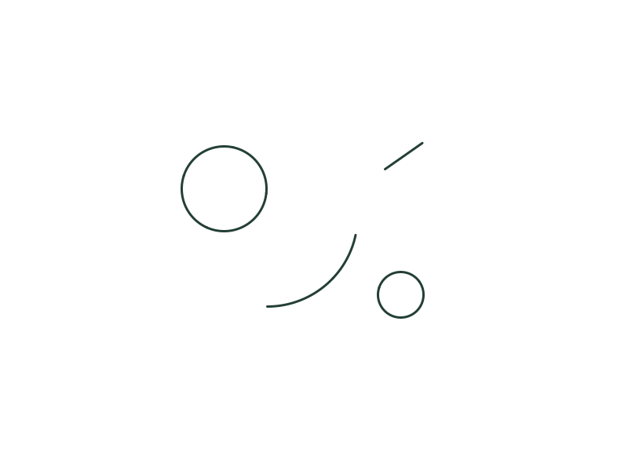

Creative challenges for curious minds
One start.
Many possibilities.
A few marks. An unusual constraint. Something only you could have imagined.
Paper or pixels. Rough sketches welcome. No account needed.

What else could these marks become?
Begin with a little.Everyone gets the same starting point.
Follow a constraint.Keep the marks. Add your imagination.
See it differently.No single correct answer.
Our first small experiment
A few marks, many possibilities.
Turn the starting marks into a scene, an object, a story or something we haven't thought of.
Take a few minutes or stay with it longer. Artistic polish isn't the goal. The surprise is seeing how differently people think.
Meet your starting point ↗Curious about other interpretations?
Try your own idea first if you prefer, or browse whenever curiosity wins.
Explore three illustrative examples →